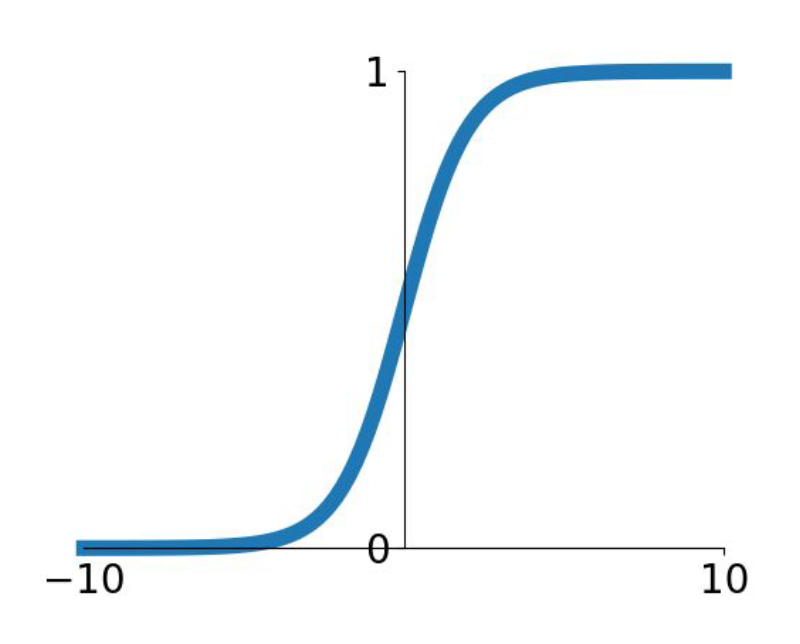
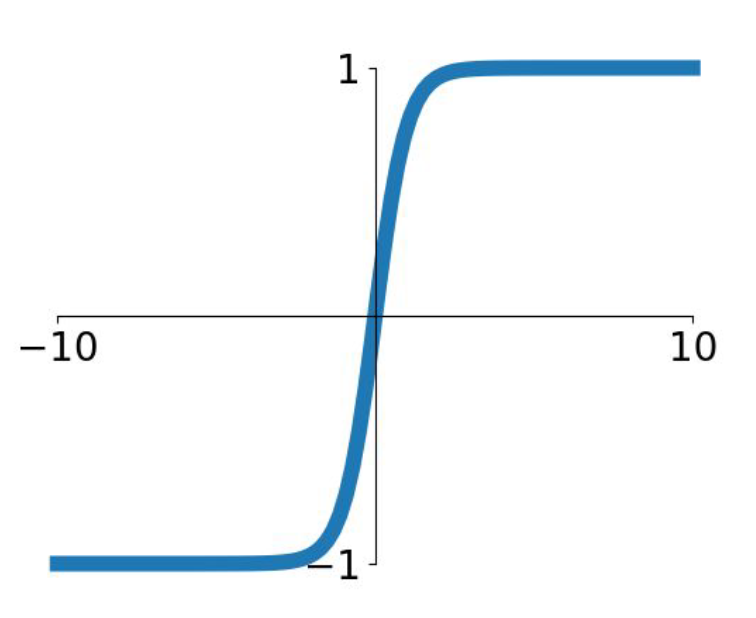
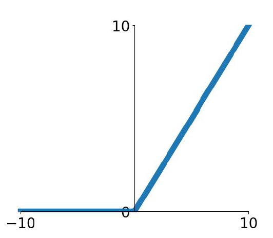
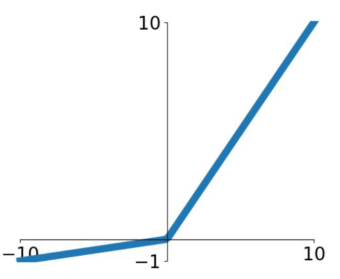
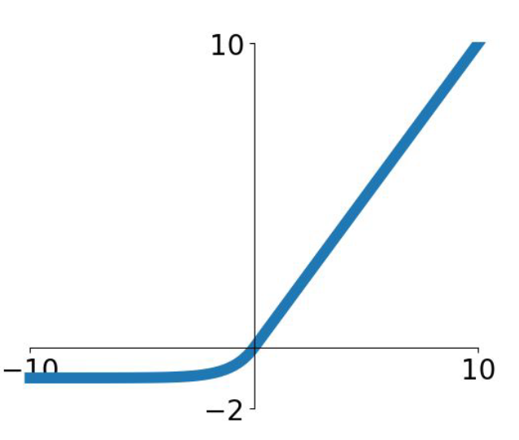
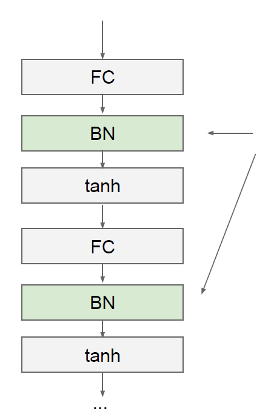
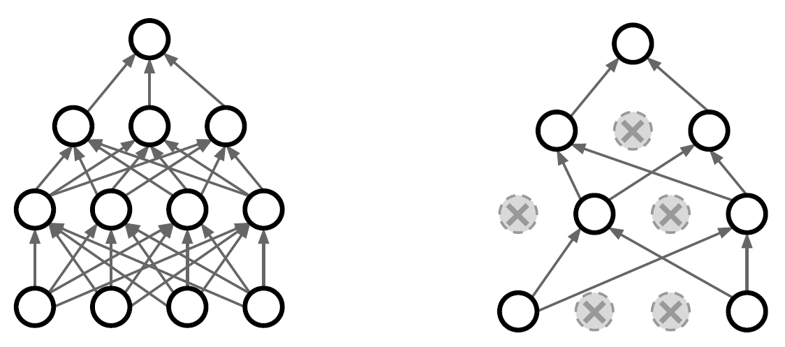
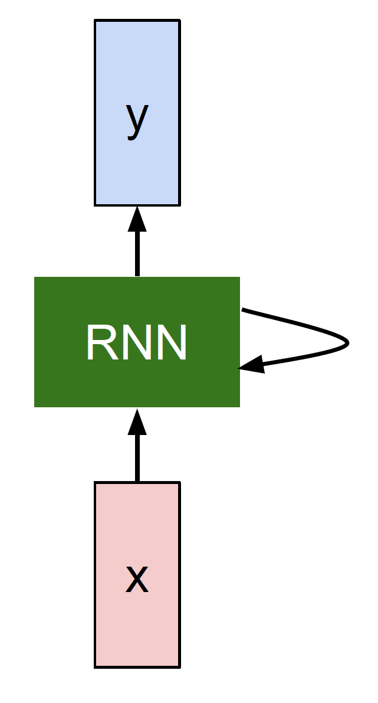

Lecture 2: Linear classification
将线性分类器看做模板匹配：
关于权重$W$的另一个解释是它的每一行对应着一个分类的模板（有时候也叫作原型）。一张图像对应不同分类的得分，是通过使用内积（也叫点积）来比较图像和模板，然后找到和哪个模板最相似。从这个角度来看，线性分类器就是在利用学习到的模板，针对图像做模板匹配。从另一个角度来看，可以认为还是在高效地使用k-NN，不同的是我们没有使用所有的训练集的图像来比较，而是每个类别只用了一张图片（这张图片是我们学习到的，而不是训练集中的某一张），而且我们会使用（负）内积来计算向量间的距离，而不是使用$L_1$或者$L_2$距离。

可以看到马的模板看起来似乎是两个头的马，这是因为训练集中的马的图像中马头朝向各有左右造成的。线性分类器将这两种情况融合到一起了。类似的，汽车的模板看起来也是将几个不同的模型融合到了一个模板中，并以此来分辨不同方向不同颜色的汽车。这个模板上的车是红色的，这是因为CIFAR-10中训练集的车大多是红色的。线性分类器对于不同颜色的车的分类能力是很弱的，但是后面可以看到神经网络是可以完成这一任务的。神经网络可以在它的隐藏层中实现中间神经元来探测不同种类的车（比如绿色车头向左，蓝色车头向前等）。而下一层的神经元通过计算不同的汽车探测器的权重和，将这些合并为一个更精确的汽车分类分值。
偏差和权重的合并技巧
评分函数定义为：$f(x_i,W,b)=Wx_i+b$. 分开处理这两个参数$W$和偏差参数$b$有点笨拙，一般常用的方法是把两个参数放到同一个矩阵中，同时$x_i$向量就要增加一个维度，这个维度的数值是常量1，这就是默认的偏差维度。这样新的公式就简化成这样：$f(x_i,W)=Wx_i$

Loss Function
Multiclass SVM
第$i$个数据中包含图像$x_i$的像素和标签$y_i$. 评分函数输入像素数据，然后通过公式$f(x_i,W)$来计算不同分类类别的分值。这里我们将分值简写为$s$, 针对第$j$个类别的得分就是$s_j$. 针对第$i$个数据的多类SVM的损失函数定义：
$$ \begin{align*} L_i&=\sum_{j\neq y_i}\max(0,s_j-s_{y_i}+\Delta)\\ &= \left\{ \begin{aligned} &0&if\quad s_{y_i}\geq s_j+\Delta\\ &s_j-s_{y_i}+\Delta& otherwise \end{aligned} \right. \end{align*} $$
1 | def L_i_vectorized(x,y,W): |
举例
假设有3个分类，并且得到了分值$s=[13,-7,11], y_i=0, \Delta =10$. 上面的公式是将所有不正确分类($j\neq y_i$)加起来，所以我们得到两个部分
$$ L_i=\max(0,-7-13+10)+\max(0,11-13+10) $$
可以看到第一个部分结果是0，这是因为$[-7-13+10]$得到的是负数，经过$\max(0,-)$函数处理后得到0. 这一对类别分数和标签的损失值是0，这是因为正确分类的得分13与错误分类的得分-7的差为20，高于边界值10。而SVM只关心差距至少要大于10，更大的差值还是算作损失值为0。第二个部分计算$[11-13+10]$得到8。虽然正确分类的得分比不正确分类的得分要高（13>11），但是比10的边界值还是小了，分差只有2，这就是为什么损失值等于8。简而言之，SVM的损失函数想要正确分类类别的分数$y_i$比不正确类别分数高，而且至少要高$\Delta$。如果不满足这点，就开始计算损失值。折页损失 Hinge Loss
$\max(0,-)$被称为折页损失。平方折页损失$\max(0,-)^2$ (L2-SVM)将更强烈（平方地而不是线性地）地惩罚过界的边界值。

多类SVM“想要”正确类别的分类分数比其他不正确分类类别的分数要高，而且至少高出$\Delta$的边界值。如果其他分类分数进入了红色的区域，甚至更高，那么就开始计算损失。如果没有这些情况，损失值为0.
正则化 Regularization
假设有一个数据集和一个权重集$W$能够正确地分类每个数据（即所有的边界都满足，对于所有的$i$都有$L_i=0$）。问题在于这个$W$并不唯一：可能有很多相似的$W$都能正确地分类所有的数据。一个简单的例子：如果$W$能够正确分类所有数据，即对于每个数据，损失值都是0。那么当$\lambda > 1$时，任何数乘$\lambda W$都能使得损失值为0，因为这个变化将所有分值的大小都均等地扩大了，所以它们之间的绝对差值也扩大了。
换句话说，我们希望能向某些特定的权重$W$添加一些偏好，对其他权重则不添加，以此来消除模糊性。这一点是能够实现的，方法是向损失函数增加一个正则化惩罚$R(W)$. 最常用的是L2范式：
$$ R(W)=\sum_k\sum_lW_{k,l}^2 $$
完整的Loss function如下所示：$$ L=\frac{1}{N}\sum_iL_i+\lambda R(W) $$
假设输入向量$x=[1,1,1,1]$, 两个权重向量$w_1=[1,0,0,0]$, $w_2=[0.25,0.25,0.25,0.25]$. 那么$w_1^Tx=w_2^Tx=1$, 两个权重向量都得到同样的内积，但是$w_1$的L2惩罚是1，而$w_2$的L2惩罚是0.25. 从直观上看，L2惩罚倾向于更小更分散的权重向量，这就会鼓励分类器最终将所有维度上的特征都用起来，而不是强烈依赖其中少数几个维度。在后面的课程中可以看到，这一效果将会提升分类器的泛化能力，并避免**过拟合**。Tip: 选择$\Delta$
在绝大多数情况下设为$\Delta=1$都是安全的。超参数$\Delta$和$\lambda$看起来是两个不同的超参数，但实际上他们一起控制同一个权衡：即损失函数中的数据损失和正则化损失之间的权衡。理解这一点的关键是要知道，权重$W$的大小对于分类分值有直接影响（当然对他们的差异也有直接影响）：当我们将$W$中值缩小，分类分值之间的差异也变小，反之亦然。因此，不同分类分值之间的边界的具体值（比如$\Delta=1$或$\Delta=100$）从某些角度来看是没意义的，因为权重自己就可以控制差异变大和缩小。也就是说，真正的权衡是我们允许权重能够变大到何种程度（通过正则化强度$\lambda$来控制）。
Softmax classifier
SVM将输出$f(x_i,W)$作为每个分类的评分（因为无定标，所以难以直接解释）。与SVM不同，Softmax的输出（归一化的分类概率）更加直观，并且从概率上可以解释。在Softmax分类器中，函数映射$f(x_i,W)=Wx_i$保持不变，但将这些评分值视为每个分类的未归一化的对数（一般以$e$为底）概率：
$$ s=f(x_i,W) $$
$$ P(Y=k|X=x_i)=\frac{e^{s_k}}{\sum_je^{s_j}} $$
$$ L_i=-\log P(Y=y_i|X=x_i) $$

Tip: 数值稳定
编程实现softmax函数计算的时候，中间项$e^{s_{y_i}}$和$\sum_je^{s_j}$因为存在指数函数，所以数值可能非常大。除以大数值可能导致数值计算的不稳定，所以学会使用归一化技巧非常重要。如果在分式的分子和分母都乘以一个常数$C$, 并把它变换到求和之中，就能得到一个从数学上等价的公式：
$$
\frac{e^{s_{y_i}}}{\sum_je^{s_j}}=\frac{Ce^{s_{y_i}}}{C\sum_je^{s_j}}=\frac{e^{s_{y_i}+\log C}}{\sum_je^{s_j+\log C}}
$$
$C$的值可自由选择，不会影响计算结果，通过使用这个技巧可以提高计算中的数值稳定性。通常将$C$设为$\log C=-\max_js_j$. 简单地说，就是应该将向量$s$中的数值进行平移，使得最大值为0.
Tip: 令人困惑的命名
精确地说，SVM分类器使用的是折叶损失（hinge loss），有时候又被称为最大边界损失（max-margin loss）。Softmax分类器使用的是交叉熵损失（cross-entropy loss）。Softmax分类器的命名是从softmax函数那里得来的，softmax函数将原始分类评分变成正的归一化数值，所有数值和为1，这样处理后交叉熵损失才能应用。注意从技术上说“softmax损失（softmax loss）”是没有意义的，因为softmax只是一个压缩数值的函数。但是在这个说法常常被用来做简称。
SVM和Softmax比较
SVM分类器将它们看做是分类评分，它的损失函数鼓励正确的分类的分值比其他分类的分值高出至少一个边界值。Softmax分类器将这些数值看做是每个分类没有归一化的对数概率，鼓励正确分类的归一化的对数概率变高，其余的变低。
在实际使用中，SVM和Softmax经常是相似的：通常说来，两种分类器的表现差别很小，不同的人对于哪个分类器更好有不同的看法。相对于Softmax分类器，SVM更加“局部目标化（local objective）”，SVM只要边界值被满足了就满意了，不会超过限制去细微地操作具体分数。这既可以看做是一个优势，也可以看做是一个劣势。而softmax分类器对于分数是永远不会满意的：正确分类总能得到更高的可能性，错误分类总能得到更低的可能性，损失值总是能够更小。
Lecture3: Optimization
SVM Loss Function的特征
分段线性结构
假设有一个简单的数据集，其中包含有3个只有1个维度的点，数据集数据点有3个类别。那么完整的无正则化SVM的损失值计算如下：
$$ \begin{align*} L_0 = & \max(0, w_1^Tx_0 - w_0^Tx_0 + 1) + \max(0, w_2^Tx_0 - w_0^Tx_0 + 1) \\\\ L_1 = & \max(0, w_0^Tx_1 - w_1^Tx_1 + 1) + \max(0, w_2^Tx_1 - w_1^Tx_1 + 1) \\\\ L_2 = & \max(0, w_0^Tx_2 - w_2^Tx_2 + 1) + \max(0, w_1^Tx_2 - w_2^Tx_2 + 1) \\\\ L = & (L_0 + L_1 + L_2)/3 \end{align*} $$
因为这些例子都是一维的，所以数据$x_i$和权重$w_j$都是数字。观察$w_0$，可以看到上面的式子中一些项是$w_0$的线性函数，且每一项都会与0比较，取两者的最大值。可作图如下：
需要多说一句的是，你可能根据SVM的损失函数的碗状外观猜出它是一个凸函数。关于如何高效地最小化凸函数的论文有很多，你也可以学习斯坦福大学关于凸函数最优化的课程。但是一旦我们将$f$函数扩展到神经网络，目标函数就就不再是凸函数了，图像也不会像上面那样是个碗状，而是凹凸不平的复杂形状。
分析法计算SVM Loss Function的梯度
$$ L_i = \sum_{j\neq y_i} \left[ \max(0, w_j^Tx_i - w_{y_i}^Tx_i + \Delta) \right] $$
$$ \nabla_{w_{y_i}} L_i = - \left( \sum_{j\neq y_i} \mathbb{1}(w_j^Tx_i - w_{y_i}^Tx_i + \Delta > 0) \right) x_i $$
其中$\mathbb{1}$是一个示性函数，如果括号中的条件为真，那么函数值为1，如果为假，则函数值为0。虽然上述公式看起来复杂，但在代码实现的时候比较简单：只需要计算没有满足边界值的分类的数量（因此对损失函数产生了贡献），然后乘以$x_i$就是梯度了。注意，这个梯度只是对应正确分类的$W$的行向量的梯度，那些$j\neq y_i$行的梯度是：
$$ \nabla_{w_j} L_i = \mathbb{1}(w_j^Tx_i - w_{y_i}^Tx_i + \Delta > 0) x_i $$
SVM Loss Function梯度的向量化计算
SVM Loss Function的计算

1 | num_train = X.shape[0] |
SVM Loss Function梯度的计算
设对于图像$x_i$，其对应的正觉分类为$y_i$类，则与$x_i$对应的$L_i$为：
$$ \begin{align*} L_i&=\max(0,x_iw_0-x_iw_{y_i}+\Delta)\\ &+\max(0,x_iw_1-x_iw_{y_i}+\Delta)\\ &+\cdots\\ &+\max(0,x_iw_{y_i-1}-x_iw_{y_i}+\Delta)\\ &+\max(0,x_iw_{y_i+1}-x_iw_{y_i}+\Delta)\\ &+\cdots \end{align*} $$
上式中的每一行表示类别 $j$ 的分数对$L_i$的贡献（比如，第一行表示类别$0$对$L_i$的贡献，第二行表示类别$1$对$L_i$的贡献，等等），而正确分类的分数对最终的$L_i$没有贡献（没有第$y_i$行）令$M_{ij} = x_i w_j - x_i w_{y_i} + \Delta$ （$M_{ij}$组成了上图中的$Margins$矩阵）
那么，当$M_{ij}>0$时，$\frac{\partial L_i}{\partial w_j}$才存在
下面对$w_0,w_1,\cdots$求偏导：
$$ \begin{align*} \frac{\partial L_i}{\partial w_0} &= \mathbb{1}(M_{i0}>0)\cdot x_i^T \\ \frac{\partial L_i}{\partial w_1} &= \mathbb{1}(M_{i1}>0)\cdot x_i^T \\ &\cdots \\ \frac{\partial L_i}{\partial w_{y_i-1}} &= \mathbb{1}(M_{i,y_i-1}>0)\cdot x_i^T \\ \frac{\partial L_i}{\partial w_{y_i}} &= [-\sum_{j\neq y_i}\mathbb{1}(M_j>0)]\cdot x_i^T \\ \frac{\partial L_i}{\partial w_{y_i+1}} &= \mathbb{1}(M_{i,y_i+1}>0)\cdot x_i^T\\ &\cdots\\ \end{align*} $$
因此，SVM Loss Function的梯度为：
$$ \begin{align*} 当j\neq y_i时，\frac{\partial L_i}{\partial w_j} = \mathbb{1}(M_{ij}>0)\cdot x_i^T \\ 当j=y_i时，\frac{\partial L_i}{\partial w_j} = [-\sum_{j\neq y_i}\mathbb{1}(M_{ij}>0)]\cdot x_i^T \\ \end{align*} $$
现在我们已经知道了$\frac{\partial L_i}{\partial w_j}$的公式，在进行向量化时，比较麻烦的是当$j=y_i$时梯度公式与其他情况下不一致。但总的形式其实没有变，即$L_i$对$w_j$的梯度是一个系数与$x_i^T$相乘。关键是要得到该系数矩阵(Coeff)。
仔细想一下该系数矩阵的含义，当$j\neq y_i$时，若$M_{ij}>0$，系数应该为$1$；当$j=y_i$时，系数应该是$Margins$中所有大于$0$的元素个数，再加一个负号。

得到系数矩阵(Coeff)后，有：
$$ \frac{\partial L_i}{\partial w_j} = Coeff_{i,j}\cdot x_i^T $$

现在来考虑向量化的$\frac{\partial L}{\partial w}$的矩阵的运算。因为$L=\frac{1}{N}\sum_iL_i+\lambda R(W)$
$$ \begin{align*} \frac{\partial L}{\partial w_j} &= \frac{1}{N} \sum_i\frac{\partial L_i}{\partial w_j} + 2\lambda W\\ &= \frac{1}{N} \sum_i Coeff_{i,j}\cdot x_i^T + 2\lambda W\\ \end{align*} $$


即：
$$ \frac{\partial L}{\partial W} = X^T\cdot Coeff $$
再
$$ \frac{\partial L}{\partial W} = \frac{1}{N} \frac{\partial L}{\partial W} +2\lambda W $$
即可1 | coeffs = np.zeros(margins.shape) |
Softmax Loss Function梯度的向量化计算
Softmax Loss Function的计算
计算公式详见Lecture2. 注意数值稳定即可
1 | num_train = X.shape[0] |
Softmax Loss Function梯度的计算
对于图像$x_i$，其对应的loss为：
$$ \begin{align*} L_i &=-\log P(Y=y_i|X=x_i)\\ &= -\log (\frac{e^{s_{y_i}}}{\sum_j e^{s_j}})\\ &= -s_{y_i} + \log (\sum_j e^{s_j})\\ &= -x_i w_{y_i} + \log (\sum_j e^{x_i w_j}) \end{align*} $$
所以：$$ \begin{align*} \frac{\partial L_i}{\partial w_0} &= \frac{e^{x_i w_0}}{\sum_j e^{x_i w_j}}\cdot x_i^T\\ \frac{\partial L_i}{\partial w_1} &= \frac{e^{x_i w_1}}{\sum_j e^{x_i w_j}}\cdot x_i^T\\ &\cdots\\ \frac{\partial L_i}{\partial w_{y_i}} &= -x_i^T + \frac{e^{x_i w_{y_i}}}{\sum_j e^{x_i w_j}}\cdot x_i^T =\ (\frac{e^{x_i w_{y_i}}}{\sum_j e^{x_i w_j}} - 1)\cdot x_i^T\\ &\cdots\\ \end{align*} $$
注意到$\frac{\partial L_i}{\partial w_j}$等于$x_i^T$乘以第$i$张图片在第$j$个标签所取得的指数归一化分数。（若$j=y_i$，系数是这个分数减1）. 这样我们得到了系数矩阵$Coeff$.与SVM Loss Function梯度的计算相同，
$$ \frac{\partial L}{\partial W} = X^T\cdot Coeff $$
1 | coeffs = scores #注意：这是复制，不是关联 |
Note：
$$ \begin{align*} Coeff &= \frac{\partial L}{\partial Scores}\\ \frac{\partial L}{\partial W} &= \frac{\partial L}{\partial Scores} \times \frac{\partial Scores}{\partial W} = X^T\cdot Coeff \end{align*} $$
梯度下降
Gradient descent
1 | while True: |
Mini-batch gradient descent
1 | while True: |
这个方法之所以效果不错，是因为训练集中的数据都是相关的。要理解这一点，可以想象一个极端情况：在ILSVRC中的120万个图像是1000张不同图片的复制（每个类别1张图片，每张图片有1200张复制）。那么显然计算这1200张复制图像的梯度就应该是一样的。对比120万张图片的数据损失的均值与只计算1000张的子集的数据损失均值时，结果应该是一样的。实际情况中，数据集肯定不会包含重复图像，那么小批量数据的梯度就是对整个数据集梯度的一个近似。因此，在实践中通过计算小批量数据的梯度可以实现更快速地收敛，并以此来进行更频繁的参数更新。
小批量数据策略有个极端情况，那就是每个批量中只有1个数据样本，这种策略被称为随机梯度下降(Stochastic Gradient Descent, SGD)，有时候也被称为在线梯度下降。这种策略在实际情况中相对少见，因为向量化操作的代码一次计算100个数据 比100次计算1个数据要高效很多。Mini-batch的大小是一个超参数，但是一般并不需要通过交叉验证来调参。它一般由存储器的限制来决定的，或者干脆设置为同样大小，比如32，64，128等。之所以使用2的指数，是因为在实际中许多向量化操作实现的时候，如果输入数据量是2的倍数，那么运算更快。
Lecture5: CNN
概述
卷积神经网络和上一章讲的常规神经网络非常相似：它们都是由神经元组成，神经元中有具有学习能力的权重和偏差。每个神经元都得到一些输入数据，进行内积运算后再进行激活函数运算。整个网络依旧是一个可导的评分函数：该函数的输入是原始的图像像素，输出是不同类别的评分。在最后一层（往往是全连接层），网络依旧有一个损失函数（比如SVM或Softmax），并且在神经网络中我们实现的各种技巧和要点依旧适用于卷积神经网络。
卷积神经网络的结构基于一个假设，即输入数据是图像，基于该假设，我们就向结构中添加了一些特有的性质。这些特有属性使得前向传播函数实现起来更高效，并且大幅度降低了网络中参数的数量。
用来构建CNN的各种层
卷积层
局部连接
在处理图像这样的高维度输入时，让每个神经元都与前一层中的所有神经元进行全连接是不现实的。相反，我们让每个神经元只与输入数据的一个局部区域连接。该连接的空间大小叫做神经元的感受野（receptive field），它的尺寸是一个超参数（其实就是滤波器的空间尺寸）。在深度方向上，这个连接的大小总是和输入量的深度相等。需要再次强调的是，我们对待空间维度（宽和高）与深度维度是不同的：连接在空间（宽高）上是局部的，但是在深度上总是和输入数据的深度一致。
空间排列
3个超参数控制着输出数据体的尺寸：深度（depth），步长（stride）和零填充（zero-padding）
深度
输出数据体的深度是一个超参数。它和使用的滤波器的数量一致，而每个滤波器在输入数据中寻找一些不同的东西。举例来说，如果第一个卷积层的输入是原始图像，那么在深度维度上的不同神经元将可能被不同方向的边界，或者是颜色斑点激活。
步长
在滑动滤波器的时候，必须指定步长。当步长为1，滤波器每次移动1个像素。当步长为2，滤波器滑动时每次移动2个像素。这个操作会让输出数据体在空间上变小。
零填充
有时候将输入数据体用0在边缘处进行填充是很方便的。这个零填充的尺寸是一个超参数。零填充有一个良好性质，即可以控制输出数据体的空间尺寸（最常用的是用来保持输入数据体在空间上的尺寸，这样输入和输出的宽高都相等）
输出数据体在空间上的尺寸可以通过输入数据体尺寸$W$，卷积层中神经元的感受野尺寸$F$，步长$S$和零填充的数量$P$的函数来计算：
$$ \frac{(W-F+2P)}{S}+1 $$
参数共享
作一个合理的假设：如果一个特征在计算某个空间位置$(x,y)$的时候有用，那么它在计算另一个不同位置$(x_2, y_2)$的时候也有用。基于这个假设，可以显著地减少参数数量。换言之，就是将深度维度上一个单独的2维切片看做深度切片（depth slice），比如一个数据体尺寸为$[55\times 55\times 96]$的就有96个深度切片，每个尺寸为$[55\times 55]$。在每个深度切片上的神经元都使用同样的权重和偏差。在这样的参数共享下，例子中的第一个卷积层就只有96个不同的权重集了，一个权重集对应一个深度切片。
注意，如果在一个深度切片中的所有权重都使用同一个权重向量，那么卷积层的前向传播在每个深度切片中可以看做是在计算神经元权重和输入数据体的卷积（这就是“卷积层”名字由来）。这也是为什么总是将这些权重集合称为滤波器（filter）或卷积核（kernel），因为它们和输入进行了卷积。
注意有时候参数共享假设可能没有意义，特别是当卷积神经网络的输入图像是一些明确的中心结构时候。这时候我们就应该期望在图片的不同位置学习到完全不同的特征。一个具体的例子就是输入图像是人脸，人脸一般都处于图片中心。你可能期望不同的特征，比如眼睛特征或者头发特征可能（也应该）会在图片的不同位置被学习。在这个例子中，通常就放松参数共享的限制，将层称为局部连接层（Locally-Connected Layer）。
小结
输入数据体的尺寸为$W_1 \times H_1 \times D_1$
四个超参数：滤波器数量$K$，滤波器尺寸$F$，步长$S$，零填充数量$P$
输出数据体的尺寸为$W_2 \times H_2 \times D_2$，其中：
$$ \begin{align*} W_2 &= \frac{(W_1-F+2P)}{S}+1\\ H_2 &= \frac{(H_1-F+2P)}{S}+1\\ D_2 &= K \end{align*} $$
由于参数共享，每个滤波器包含$F\cdot F\cdot D_1$个权重，卷积层一共有$F\cdot F\cdot D_1\cdot K$个权重和$K$个偏置
在输出数据体中，第$d$个深度切片（空间尺寸是$W_2 \times H_2$），用第$d$个滤波器和输入数据进行有效卷积运算的结果，最后在加上第$d$个偏差。
汇聚层/池化层
通常，在连续的卷积层之间会周期性地插入一个汇聚层。它的作用是逐渐降低数据体的空间尺寸，这样的话就能减少网络中参数的数量，使得计算资源耗费变少，也能有效控制过拟合。汇聚层使用MAX操作，对输入数据体的每一个深度切片独立进行操作，改变它的空间尺寸。最常见的形式是汇聚层使用尺寸2x2的滤波器，以步长为2来对每个深度切片进行降采样，将其中75%的激活信息都丢掉。每个MAX操作是从4个数字中取最大值（也就是在深度切片中某个2x2的区域）。深度保持不变。汇聚层的一些公式：
输入数据尺寸$W_1, H_1, D_1$
两个超参数：空间大小$F$，步长$S$
输出数据尺寸$W_2, H_2, D_2$，其中：
$$ \begin{align*} W_2 &= \frac{(W_1-F)}{S}+1\\ H_2 &= \frac{(H_1-F)}{S}+1\\ D_2 &= D_1 \end{align*} $$
因为对输入进行的是固定函数计算，所以没有引入参数
在汇聚层中很少使用零填充
除了最大汇聚，汇聚单元还可以使用其他的函数，比如平均汇聚（average pooling）或L-2范式汇聚（L2-norm pooling）。平均汇聚历史上比较常用，但是现在已经很少使用了。因为实践证明，最大汇聚的效果比平均汇聚要好。

反向传播：
回顾一下反向传播的内容，其中$\max (x,y)$函数的反向传播可以简单理解为将梯度只沿最大的数回传。因此，在向前传播经过汇聚层的时候，通常会把池中最大元素的索引记录下来（有时这个也叫作道岔（switches）），这样在反向传播的时候梯度的路由就很高效。
把全连接层转化成卷积层
全连接层和卷积层之间唯一的不同就是卷积层中的神经元只与输入数据中的一个局部区域连接，并且在卷积列中的神经元共享参数。然而在两类层中，神经元都是计算点积，所以它们的函数形式是一样的。因此，将此两者相互转化是可能的。
对于任一个卷积层，都存在一个能实现和它一样的前向传播函数的全连接层。权重矩阵是一个巨大的矩阵，除了某些特定块（这是因为有局部连接），其余部分都是零。而在其中大部分块中，元素都是相等的（因为参数共享）。
相反，任何全连接层都可以被转化为卷积层。比如，一个$K=4096$的全连接层，输入数据体的尺寸是$7\times 7\times 512$，这个全连接层可以被等效地看做一个$F=7, P=0, S=1, K=4096$的卷积层。换句话说，就是将滤波器的尺寸设置为和输入数据体的尺寸一致了。因为只有一个单独的深度列覆盖并滑过输入数据体，所以输出将变成$1\times 1\times 4096$，这个结果就和使用初始的那个全连接层一样了。
在两种变换中，将全连接层转化为卷积层在实际运用中更加有用。（不是很懂）
CNN的结构
卷积神经网络通常是由三种层构成：卷积层，汇聚层（除非特别说明，一般就是最大值汇聚）和全连接层（简称FC）。ReLU激活函数也应该算是是一层，它逐元素地进行激活函数操作。
层的排列规律
卷积神经网络最常见的形式就是将一些卷积层和ReLU层放在一起，其后紧跟汇聚层，然后重复如此直到图像在空间上被缩小到一个足够小的尺寸，在某个地方过渡成成全连接层也较为常见。最后的全连接层得到输出，比如分类评分等。换句话说，最常见的卷积神经网络结构如下：
1 | INPUT -> [[CONV -> RELU]*N -> POOL?]*M -> [FC -> RELU]*K -> FC |
其中*指的是重复次数，POOL?指的是一个可选的汇聚层。其中N >=0,通常N<=3, M>=0, K>=0, 通常K<3. 下面是一些常见的网络结构规律：
INPUT -> FC,实现一个线性分类器，此处N = M = K = 0INPUT -> CONV -> RELU -> FCINPUT -> [CONV -> RELU -> POOL]*2 -> FC -> RELU -> FC. 此处在每个汇聚层之间有一个卷积层。INPUT -> [CONV -> RELU -> CONV -> RELU -> POOL]*3 -> [FC -> RELU]*2 -> FC. 此处每个汇聚层前有两个卷积层，这个思路适用于更大更深的网络，因为在执行具有破坏性的汇聚操作前，多重的卷积层可以从输入数据中学习到更多的复杂特征。
几个小滤波器卷积层的组合比一个大滤波器卷积层好：假设你一层一层地重叠了3个$3\times 3$的卷积层（层与层之间有非线性激活函数）。在这个排列下，第一个卷积层中的每个神经元都对输入数据体有一个$3\times 3$的视野。第二个卷积层上的神经元对第一个卷积层有一个$3\times 3$的视野，也就是对输入数据体有$5\times 5$的视野。同样，在第三个卷积层上的神经元对第二个卷积层有$3\times 3$的视野，也就是对输入数据体有$7\times 7$的视野。假设不采用这3个$3\times 3$的卷积层，二是使用一个单独的有$7\times 7$的感受野的卷积层，那么所有神经元的感受野也是$7\times 7$，但是就有一些缺点。首先，多个卷积层与非线性的激活层交替的结构，比单一卷积层的结构更能提取出深层的更好的特征。其次，假设所有的数据有$C$个通道，那么单独的$7\times 7$卷积层将会包含$C\times (7\times 7\times C) = 49C^2$个参数，而3个$3\times 3$的卷积层的组合仅有$3\times C\times (3\times 3\times C) = 27C^2$个参数。直观说来，最好选择带有小滤波器的卷积层组合，而不是用一个带有大的滤波器的卷积层。前者可以表达出输入数据中更多个强力特征，使用的参数也更少。唯一的不足是，在进行反向传播时，中间的卷积层可能会导致占用更多的内存。
Lecture7&8: Training Neural Networks
建立模型
激活函数
Sigmoid
$$ \sigma(x) = \frac{1}{1+e^{-x}}\\ \sigma'(x) = \sigma (x) (1 - \sigma(x)) $$
- Sigmoid函数饱和使梯度消失。当神经元的激活在接近0或1处时会饱和：在这些区域，梯度几乎为0. 在反向传播的时候，这个（局部）梯度将会与整个损失函数关于该门单元输出的梯度相乘。因此，如果局部梯度非常小，那么相乘的结果也会接近零，这会有效地“杀死”梯度，几乎就有没有信号通过神经元传到权重再到数据了。还有，为了防止饱和，必须对于权重矩阵初始化特别留意。比如，如果初始化权重过大，那么大多数神经元将会饱和，导致网络就几乎不学习了。
- Sigmoid函数的输出不是零中心的。这个性质并不是我们想要的，因为在神经网络后面层中的神经元得到的数据将不是零中心的。这一情况将影响梯度下降的运作，因为如果输入神经元的数据总是正数（比如在$f=w^Tx+b$中每个元素都$x>0$），那么关于$w$的梯度在反向传播的过程中，将会要么全部是正数，要么全部是负数（具体依整个表达式$f$而定）。这将会导致梯度下降权重更新时出现z字型的下降。然而，可以看到整个批量的数据的梯度被加起来后，对于权重的最终更新将会有不同的正负，这样就从一定程度上减轻了这个问题。因此，该问题相对于上面的神经元饱和问题来说只是个小麻烦，没有那么严重。
- 指数计算开销较大
tanh
$$ {\rm tanh}(x)=2\sigma(2x)-1\\ {\rm tanh}'(x)=1-{\rm tanh}^2(x) $$
+ 零中心
- 仍然存在梯度消失问题
ReLU
$$
ReLU(x) = \max(0,x)
$$
+ 不存在梯度消失问题（在$x>0$的区域）
+ 计算效率高
+ 收敛比sigmoid/tanh快（大约6倍）
- 输出不是零中心
- $x<0$的区域依然存在梯度消失问题
- 在训练的时候，ReLU单元比较脆弱并且可能“死掉”。举例来说，当一个很大的梯度流过ReLU的神经元的时候，可能会导致梯度更新到一种特别的状态，在这种状态下神经元将无法被其他任何数据点再次激活。如果这种情况发生，那么从此所有流过这个神经元的梯度将都变成0。也就是说，这个ReLU单元在训练中将不可逆转的死亡，因为这导致了数据多样化的丢失。例如，如果学习率设置得太高，可能会发现网络中40%的神经元都会死掉（在整个训练集中这些神经元都不会被激活）。通过合理设置学习率，这种情况的发生概率会降低。
ReLU的死亡问题：
假设某层网络权重为$W$, 输入为$x$, 输出为$z$, 经过ReLU激活后为$a$.
前向传播：
$$ z = W\cdot x\\ a = {\rm ReLU}(z) $$
设损失函数为$L$，反向传播：
$$ \frac{\partial L}{\partial z} = \frac{\partial L}{\partial a}\cdot \frac{\partial a}{\partial z}\\ \frac{\partial L}{\partial W} = \frac{\partial L}{\partial z}\cdot x^T\\ \frac{\partial L}{\partial x} = W^T\cdot \frac{\partial L}{\partial z}\\ $$
对固定的学习率$\alpha$, 梯度$\frac{\partial L}{\partial W}$越大，权重$W$更新的越多。如果梯度太大，而学习率又不小心设置得太大，就会导致权重一下子更新过多，就有可能出现这种情况：对于任意训练样本$x_i$，网络的输出都是小于0的。

例如，对于上面的网络结构， $W$为$2\times 4$的矩阵，单个训练样本 $x$为$4\times 1$的向量。为了方便，只研究红线连接的神经元（也就是权重矩阵$W$ 中的一行）
$$ z_1 = \left[ \begin{matrix} W_{11} & W_{12} & W_{13}& W_{14} \end{matrix} \right] \cdot \left[ \begin{matrix} x_1\\x_2\\x_3\\x_4 \end{matrix} \right] $$
假设这个时候的$W$是坏掉的，对所有的训练样本$x$，输出的这个$z_1$始终是小于零的数。那么，
$$ \begin{align*} a_1&=\max(z_1,0) = 0\\ \frac{\partial L}{\partial z_1} &= \frac{\partial L}{\partial a_1}\cdot \frac{\partial a_1}{\partial z_1}\\ \end{align*} $$
由于$z_1<0$时， $a_1$是常数 0。所以始终有$\frac{\partial a_1}{\partial z_1}=0$, 所以导致
$$
\frac{\partial L}{\partial z_1} = \frac{\partial L}{\partial a_1}\cdot \frac{\partial a_1}{\partial z_1} = 0
$$
而
$$
\frac{\partial L}{\partial W_1} = \frac{\partial L}{\partial z_1}\cdot x^T = 0
$$
这就出问题了，对于权重矩阵$W$的第一行的参数，在整个训练集上，损失函数对它的导数始终为零，也就是说，遍历了整个训练集，它的参数都没有更新。因此就说该神经元死了.
Leaky ReLU
$$
Leaky \ ReLU(x) = \max(0.01x,x)
$$
+ 不存在饱和问题
+ 计算效率高
+ 收敛速度快
+ 不会“死亡”
ELU
$$
ELU(x) = \begin{cases}
x,\quad x>0\
\alpha (e^x-1),\quad x\leq 0\
\end{cases}
$$
+ ReLU的所有优点
+ 输出接近零中心
+ 负饱和机制使得其对噪声鲁棒性更强
- 计算开销较大
Maxout
$$
f(x)=\max (w_1^Tx+b_1, w_2^Tx+b_2)
$$
ReLU和Leaky ReLU都是这个公式的特殊情况（比如ReLU就是当$w_1, b_1 = 0$的时候）。这样Maxout神经元就拥有ReLU单元的所有优点（线性操作和不饱和），而没有它的缺点（死亡的ReLU单元）。然而和ReLU对比，它每个神经元的参数数量增加了一倍，这就导致整体参数的数量激增。
最后需要注意一点：在同一个网络中混合使用不同类型的神经元是非常少见的，虽然没有什么根本性问题来禁止这样做。
那么该用那种呢？用ReLU非线性函数。注意设置好学习率，或许可以监控你的网络中死亡的神经元占的比例。如果单元死亡问题困扰你，就试试Leaky ReLU或者Maxout，不要再用sigmoid了。也可以试试tanh，但是其效果应该不如ReLU或者Maxout。
神经网络结构
输出层
和神经网络中其他层不同，输出层的神经元一般是不会有激活函数的（或者也可以认为它们有一个线性相等的激活函数）。这是因为最后的输出层大多用于表示分类评分值，因此是任意值的实数，或者某种实数值的目标数（比如在回归中）。
表达能力
理解具有全连接层的神经网络的一个方式是：可以认为它们定义了一个由一系列函数组成的函数族，网络的权重就是每个函数的参数。
拥有至少一个隐层的神经网络是一个通用的近似器。在研究（例如1989年的论文Approximation by Superpositions of Sigmoidal Function，或者Michael Nielsen的这个直观解释。）中已经证明，给出任意连续函数$f(x)$和任意$\epsilon > 0$，均存在一个至少含1个隐层的神经网络$g(x)$（并且网络中有合理选择的非线性激活函数，比如sigmoid），对于$\forall x$，使得$|f(x)-g(x)|<\epsilon$。换句话说，神经网络可以近似任何连续函数。
既然一个隐层就能近似任何函数，那为什么还要构建更多层来将网络做得更深？答案是：虽然一个2层网络在数学理论上能完美地近似所有连续函数，但在实际操作中效果相对较差。 神经网络在实践中非常好用，是因为它们表达出的函数不仅平滑，而且对于数据的统计特性有很好的拟合。同时，网络通过最优化算法（例如梯度下降）能比较容易地学习到这个函数。类似的，虽然在理论上深层网络（使用了多个隐层）和单层网络的表达能力是一样的，但是就实践经验而言，深度网络效果比单层网络好。
另外，在实践中3层的神经网络会比2层的表现好，然而继续加深（做到4，5，6层）很少有太大帮助。卷积神经网络的情况却不同，在卷积神经网络中，对于一个良好的识别系统来说，深度是一个极端重要的因素（比如数十(以10为量级)个可学习的层）。对于该现象的一种解释观点是：因为图像拥有层次化结构（比如脸是由眼睛等组成，眼睛又是由边缘组成），所以多层处理对于这种数据就有直观意义。
设置层的数量和尺寸
有更多神经元的神经网络可以表达更复杂的函数。然而这既是优势也是不足，优势是可以分类更复杂的数据，不足是可能造成对训练数据的过拟合。
看起来如果数据不是足够复杂，则似乎小一点的网络更好，因为可以防止过拟合。然而并非如此，防止神经网络的过拟合有很多方法（L2正则化，dropout和输入噪音等），在实践中，使用这些方法来控制过拟合比减少网络神经元数目要好得多。
不要减少网络神经元数目的主要原因在于小网络更难使用梯度下降等局部方法来进行训练：虽然小型网络的损失函数的局部极小值更少，也比较容易收敛到这些局部极小值，但是这些最小值一般都很差，损失值很高。相反，大网络拥有更多的局部极小值，但就实际损失值来看，这些局部极小值表现更好，损失更小。 在实际中，你将发现如果训练的是一个小网络，那么最终的损失值将展现出多变性：某些情况下运气好会收敛到一个好的地方，某些情况下就收敛到一个不好的极值。从另一方面来说，如果你训练一个大的网络，你将发现许多不同的解决方法，但是最终损失值的差异将会小很多。这就是说，所有的解决办法都差不多，而且对于随机初始化参数好坏的依赖也会小很多。
需要记住的是：不应该因为害怕出现过拟合而使用小网络。相反，应该进尽可能使用大网络，然后使用正则化技巧来控制过拟合。
设置数据和模型
数据预处理
均值减法
均值减法（Mean subtraction）是预处理最常用的形式。它对数据中每个独立特征减去平均值，从几何上可以理解为在每个维度上都将数据云的中心都迁移到原点。在numpy中，该操作可以通过代码X -= np.mean(X, axis=0)实现。而对于图像，更常用的是对所有像素都减去一个值，可以用X -= np.mean(X)实现，也可以在3个颜色通道上分别操作。
归一化
归一化（Normalization）是指将数据的所有维度都归一化，使其数值范围都近似相等。（一般是-1到1）这个预处理操作只有在确信不同的输入特征有不同的数值范围（或计量单位）时才有意义，但要注意预处理操作的重要性几乎等同于学习算法本身。在图像处理中，由于像素的数值范围几乎是一致的（都在0-255之间），所以进行这个额外的预处理步骤并不是很必要。
PCA和白化
实际上在卷积神经网络中并不会采用PCA和白化。然而对数据进行零中心化操作还是非常重要的，对每个像素进行归一化也很常见。
常见错误
进行预处理很重要的一点是：任何预处理策略（比如数据均值）都只能在训练集数据上进行计算，算法训练完毕后再应用到验证集或者测试集上。例如，如果先计算整个数据集图像的平均值然后每张图片都减去平均值，最后将整个数据集分成训练/验证/测试集，那么这个做法是错误的。应该怎么做呢？应该先分成训练/验证/测试集，只是从训练集中求图片平均值，然后各个集（训练/验证/测试集）中的图像再减去这个平均值。
权重初始化
错误：全零初始化/相同的初始化
如果全零初始化/初始化为相同的值，网络中的每个神经元都会计算出相同的输出，然后它们就会在反向传播中计算出同样的梯度，从而进行同样的参数更新。换句话说，如果权重被初始化为同样的值，神经元之间就失去了不对称性。
小随机数初始化
权重初始值要非常接近0又不能等于0。解决方法就是将权重初始化为很小的数值，以此来打破对称性。 W = 0.01 * np.random.randn(D,H), 生成的$W$服从标准高斯分布。实际中用均匀分布也可。
Collapse: 但是小随机数初始化仅对小型神经网络有效。以使用tanh作为激活函数的深层神经网络为例：没一层输出的均值都是0. 这很好理解，因为tanh是零中心的。但是随着层数加深，输出的方差迅速减小至几乎为零，也就是说输出的数据几乎都是零。这也就意味着上游传回的梯度乘以$W$得到的本地梯度也几乎为零，权重得不到更新

Saturate: 如果用大随机数初始化，例如W = 0.05 * np.random.randn(D,H)（依然是tanh激活函数），那么几乎所有的神经元饱和，不是输出+1就是输出-1. 梯度将均为零，权重得不到更新

Xavier初始化
（依然是tanh激活函数）W = np.random.randn(D,H)/np.sqrt(D) 其中，$D$代表该层一个神经元输入的特征数。对卷积神经网络，$D = {\rm kernei_size}^2\times {\rm input_channels}$

对于ReLU激活函数，W = np.random.randn(D,H)*np.sqrt(2/D)
Batch, Layer & Group Normalization
Batch Normalization
Intuition
One way to make deep networks easier to train is to use more sophisticated optimization procedures such as SGD+momentum, RMSProp, or Adam. Another strategy is to change the architecture of the network to make it easier to train.
One idea along these lines is batch normalization which was proposed by [1] in 2015.
The idea is relatively straightforward. Machine learning methods tend to work better when their input data consists of uncorrelated features with zero mean and unit variance. When training a neural network, we can preprocess the data before feeding it to the network to explicitly decorrelate its features; this will ensure that the first layer of the network sees data that follows a nice distribution. However, even if we preprocess the input data, the activations at deeper layers of the network will likely no longer be decorrelated and will no longer have zero mean or unit variance since they are output from earlier layers in the network. Even worse, during the training process the distribution of features at each layer of the network will shift as the weights of each layer are updated.
The authors of [1] hypothesize that the shifting distribution of features inside deep neural networks may make training deep networks more difficult. To overcome this problem, [1] proposes to insert batch normalization layers into the network. At training time, a batch normalization layer uses a minibatch of data to estimate the mean and standard deviation of each feature. These estimated means and standard deviations are then used to center and normalize the features of the minibatch. A running average of these means and standard deviations is kept during training, and at test time these running averages are used to center and normalize features.
It is possible that this normalization strategy could reduce the representational power of the network, since it may sometimes be optimal for certain layers to have features that are not zero-mean or unit variance. To this end, the batch normalization layer includes learnable shift and scale parameters for each feature dimension.
直观实现
$$ m = \frac{1}{N}\sum_{i=1}^N x_i\\ \sigma^2 = \frac{1}{N} \sum_{i=1}^N (x_i - m)^2\\ {\rm out} = \frac{X - m}{\sigma} \times \gamma + \beta\\ $$
其中，$\gamma, \beta$是可学习的参数，使输出不服从标准正态分布，提高网络的表现能力。直观实现的代码如下：
1 | #训练时batch norm层的实现 |
在训练网络时，要记录$X$均值和方差的滑动平均，即上面代码中的running_mean和running_var，在预测的时候用这两个值对$X$进行缩放：
1 | #预测时batch norm层的实现 |
然而上述实现在求本地梯度时却遇到了困难。由公式
$$
{\rm out} = \frac{X - \frac{1}{N}\sum_{i=1}^N x_i}{\sqrt{\frac{1}{N} \sum_{i=1}^N (x_i - m)^2}} \times \gamma + \beta
$$
可以看出，求解$\frac{\partial {\rm out}}{\partial \gamma}$和$\frac{\partial {\rm out}}{\partial \beta}$比较容易，但直接求解$\frac{\partial {\rm out}}{\partial x}$却非常困难。因此，我们不得不用计算图来简化求导过程。
计算图实现

正向传播
1 | def batchnorm_forward(x, gamma, beta, eps): |
反向传播
1 | def batchnorm_backward(dout, cache): |
Spatial Batch Normalization
Spatial Batch Normalization是适用于输入X维度为N, C, H, W的conv层的Batch Normalization.
Batch Norm是对维度D(X的维度是N, D)或C(X的维度是N, C, H, W)求平均。换句话说，是对每一个D中的所用N求平均。为了用之前写过的batchnorm_forward()函数(对输入X的第二个维度求平均)实现对卷积层的Batch Normalization, 我们需要把X转换成维度N*H*W, C.
但是，我们不能直接使用X.reshape(N*H*W, C)操作。容易理解，维度塌缩只能在相邻维度间进行，不相邻的维度塌缩会造成错误。因此在reshape之间，我们需要对X进行转置成N, H, W, C，使需要塌缩的维度相邻。实现的代码如下：
1 | def spatial_batchnorm_forward(x, gamma, beta, bn_param): |
1 | def spatial_batchnorm_backward(dout, cache): |
Layer Normalization
Batch Normalization让网络更容易训练，但是它的性能表现对Batch Size选取的依赖让它在训练复杂网络时的表现不那么令人满意，因为硬件限制了Batch Size的选取。有人提出了Layer Normalization以解决这个问题。Batch Normalization是对XN, D中每一个D的所有N求平均，而Layer Normalization是对XN, D中每一个N的所有D求平均。
注意：与Batch Normalization不同，Layer Normalization在网络训练和测试时的表现是相同的。因此，不用再记录running averages
注意：Batch Normalization和Layer Normalization的gamma和beta参数维度都是(D, ) 为什么？
容易看到，BatchNorm和LayerNorm的实现几乎是完全对偶的，除了gamma和beta参数没有把维度变成(N, ). 在实现时，可以把np.sum(), np.mean()的axis由0改为1，或将相应的数据转置
正向传播
由更改axis实现
1 | def layernorm_forward(x, gamma, beta, ln_param): |
反向传播
由转置实现
1 | def layernorm_backward(dout, cache): |
Group Normalization
正向传播
Group Normalization与Layer Normalization几乎是一样的，因此稍微改写后者的代码即可
1 | def spatial_groupnorm_forward(x, gamma, beta, G, gn_param): |
BatchNorm, LayerNorm & GroupNorm


正则化
L2正则化
L2正则化可能是最常用的正则化方法了。可以通过惩罚目标函数中所有参数的平方将其实现。即对于网络中的每个权重$w$，向目标函数中增加一个$\frac{1}{2}\lambda w^2$，其中$\lambda$是正则化强度。 L2正则化可以直观理解为它对于大数值的权重向量进行严厉惩罚，倾向于更加分散的权重向量。
L1正则化
L1正则化是另一个相对常用的正则化方法。对于每个$w$我们都向目标函数增加一个$\lambda |w|$。L1和L2正则化也可以进行组合：$\lambda_1 |w| + \lambda_2 w^2$，这也被称作Elastic net regularizaton。L1正则化有一个有趣的性质，它会让权重向量在最优化的过程中变得稀疏（即非常接近0）。也就是说，使用L1正则化的神经元最后使用的是它们最重要的输入数据的稀疏子集，同时对于噪音输入则几乎是不变的了。相较L1正则化，L2正则化中的权重向量大多是分散的小数字。在实践中，如果不是特别关注某些明确的特征选择，一般说来L2正则化都会比L1正则化效果好。
Max norm constrains
另一种形式的正则化是给每个神经元中权重向量的量级设定上限，并使用投影梯度下降来确保这一约束。 在实践中，与之对应的是参数更新方式不变，然后要求神经元中的权重向量$w$必须满足$||w||_2 < c$这一条件，一般$c$值为3或者4。有研究者发文称在使用这种正则化方法时效果更好。这种正则化还有一个良好的性质，即使在学习率设置过高的时候，网络中也不会出现数值“爆炸”，这是因为它的参数更新始终是被限制着的。
Dropout
一个3层神经网络的普通版随机失活可以用下面代码实现：
1 | """ 普通版随机失活: 不推荐实现 (看下面笔记) """ |
在上面的代码中，train_step函数在第一个隐层和第二个隐层上进行了两次随机失活。在输入层上面进行随机失活也是可以的，为此需要为输入数据X创建一个二值的遮罩。反向传播保持不变，但是肯定需要将遮罩U1和U2加入进去。
注意：在predict函数中不进行随机失活，但是对于两个隐层的输出都要乘以$p$，调整其数值范围。这一点非常重要，因为在测试时所有的神经元都能看见它们的输入，因此我们想要神经元的输出与训练时的预期输出是一致的。为了理解这点，先假设有一个神经元$x$的输出，那么进行随机失活的时候，该神经元的输出就是$px+(1-p)0$. 在测试时神经元总是激活的，就必须调整$x\rightarrow px$来保持同样的预期输出。
上述操作不好的性质是必须在测试时对激活数据要按照$p$进行数值范围调整。既然测试性能如此关键，实际更倾向使用反向随机失活（inverted dropout），它是在训练时就进行数值范围调整，从而让前向传播在测试时保持不变。这样做还有一个好处，无论你决定是否使用随机失活，预测方法的代码可以保持不变。反向随机失活的代码如下：
1 | """ |
Data Augmentation
Optimization
SGD
$$
x_{t+1}=x_t -\alpha \nabla f(x_t)
$$
1 | while True: |
SGD+Momentum
$$ \begin{align} v_{t+1} &= \rho v_t - \alpha \nabla f(x_t)\\ x_{t+1} &= x_t+v_{t+1} \end{align} $$
1 | vx = 0 |
$\rho$是摩擦系数。 这个变量有效地抑制了速度，降低了系统的动能，不然质点在山底永远不会停下来。通过交叉验证，这个参数通常设为[0.5,0.9,0.95,0.99]中的一个。和学习率随着时间退火类似，动量随时间变化的设置有时能略微改善最优化的效果，其中动量在学习过程的后阶段会上升。一个典型的设置是刚开始将动量设为0.5而在后面的多个周期（epoch）中慢慢提升到0.99。
Nesterov Momentum

假设某一时刻参数位于红色的点。下一时刻速度（绿色的箭头）将把我们带到箭头所指的那一点。既然如此， 我们就不要在原点（红色点）那里计算梯度了。使用Nesterov动量，我们就在这个“向前看”的地方计算梯度。
$$ \begin{align*} v_{t+1} &= \rho v_t - \alpha \nabla f(x_t + \rho v_t)\\ x_{t+1} &= x_t+v_{t+1} \end{align*} $$
然而在实践中，人们更喜欢和普通SGD或上面的动量方法一样简单的表达式 。通过$\widetilde x_t = x_t + \rho v_t$进行变量代换进行改写是可以做到的，然后用$\widetilde x_t$而不是$x$来表示上面的更新。也就是说，实际存储的参数向量总是向前一步的那个版本。$\widetilde x_t$的公式（将其重新命名为$x$）就变成了：
$$ \begin{align*} v_{t+1} &= \rho v_t - \alpha \nabla f(\widetilde x_t)\\ \widetilde x_{t+1} &= x_{t+1} + \rho v_{t+1}\\ &= x_t +v_{t+1} + \rho v_{t+1} \\ &= \widetilde x_t - \rho v_t + v_{t+1} + \rho v_{t+1}\\ &= \widetilde x_t + v_{t+1} + \rho (v_{t+1}-v_t)\\ \end{align*} $$
1 | dx = compute_gradient(x) |
RMSProp
1 | grad_squared = 0 |
RMSProp(root mean square prop) 是一个非常高效，但没有公开发表的适应性学习率方法。 这个方法用一种很简单的方式修改了Adagrad方法，让它不那么激进，单调地降低了学习率。具体说来，就是它使用了一个梯度平方的滑动平均。 decay_rate是一个超参数，常用的值是[0.9,0.99,0.999]。
Adam: RMSProp + Momentum
$$ v = 0, s= 0\\ v_t = \beta_1 v_{t-1} + (1-\beta_1)\nabla f(x_{t-1})\\ s_t = \beta_2 s_{t-1} + (1 - \beta_2) (\nabla f(x_{t-1}))^2\\ v_t^{\rm unbias} = v_t/(1-\beta_1^t)\\ s_t^{\rm unbias} = s_t/(1-\beta_2^t)\\ x_t = x_{t-1} - \alpha \frac{v_t^{\rm unbias}}{\sqrt {s_t^{\rm unbias} }+ \epsilon } $$
1 | first_moment = 0 |
论文中推荐的参数值eps=1e-8, beta1=0.9, beta2=0.999。在实际操作中，我们推荐Adam作为默认的算法，一般而言跑起来比RMSProp要好一点。但是也可以试试SGD+Nesterov动量。
Learning Rate Decay
Second-order optimization
Transfer learning
Lecture10: RNN
Vanilla RNN
Why not a standard network?

Problems:
- Inputs, outputs can be different lengths in different examples
- Doesn’t share features learned across different positions of text. (Same as convolutional networks)
Representation
$$ \begin{align*} h_t &= {\rm tanh}(W_{hh} h_{t-1} + W_{xh} x_t + b)\\ y_t &= W_{hy} h_t \end{align*} $$
Or stack $h_{t-1}, x_t$ for more concise representation:
$$ \begin{align*} h_t &= {\rm tanh}(W_{hh} h_{t-1} + W_{xh} x_t + b)\\ &={\rm tanh} \left( \left( \begin{matrix} W_{hh} & W_{hx} \end{matrix} \right) \left( \begin{matrix} h_{t-1} \\ x_t \end{matrix} \right) +b \right)\\ &={\rm tanh} \left( W \left( \begin{matrix} h_{t-1} \\ x_t \end{matrix} \right) +b \right) \end{align*} $$
RNN have an “internal state” $h_t$ that is updated as as sequence is processed.
Computational Graph
Many to Many

Many to One

One to Many

Implementation
Forward
Step Forward
1 | def rnn_step_forward(x, prev_h, Wx, Wh, b): |
Net Forward
1 | def rnn_forward(x, h0, Wx, Wh, b): |
Backward
Step backward
1 | def rnn_step_backward(dnext_h, cache): |
Net Backward
The implementation of RNN backward depends on the type of it. For example, if you have a “many to many” type RNN whose input and output are of the same length $T$, then:
$$ \begin{align*} L &= \sum_{t=1}^T L_t(\hat y_t, y_t)\\ \frac{\partial L}{\partial h_t}&= \sum_{k=t}^T \frac{\partial L_k(\hat y_k, y_k)}{\partial h_t} \\ &= \frac{\partial L_t(\hat y_t, y_t)}{\partial h_t} + \sum_{k=t+1}^T \frac{\partial L_k(\hat y_k, y_k)}{\partial h_t}\\ &=\frac{\partial L_t(h_t, y_t)}{\partial h_t} + \frac{\partial L}{\partial h_{t+1}}\\ \frac{\partial L}{\partial W_x} &= \sum_{t=1}^T \frac{\partial L_t(h_t, y_t)}{\partial W_x}\\ \frac{\partial L}{\partial W_h} &= \sum_{t=1}^T \frac{\partial L_t(h_t, y_t)}{\partial W_h}\\ \frac{\partial L}{\partial b} &= \sum_{t=1}^T \frac{\partial L_t(h_t, y_t)}{\partial b}\\ \end{align*} $$
There might be something wrong with my deduction. In the code below, dWx in every step is $\frac{\partial L}{\partial W_x}$ in every time step, not$ \frac{\partial L_t(h_t, y_t)}{\partial W_x}$
1 | def rnn_backward(dh, cache): |
Vanishing & Exploding gradients

Computing gradient of $h_0$ involves many factors of $W$ (and repeated tanh).
Largest singular value $> 1$: Exploding gradients
Largest singular value $<1$: Vanishing gradients
Exploding gradients are relatively easier to address. We can perform Gradient Clipping to scale gradient if its norm is too big:
1 | grad_norm = np.sum(grad * grad) |
To address Vanishing Gradients, we have to modify RNN architecture.
Basic RNN is not very good at capturing very long-term dependencies due to Vanishing Gradients. To explain why, remember vanishing gradients problem of training deep neural networks. The gradient from output would have a very hard time propagating back to affect the weights of earlier layers. And so in practice, what this means is it might be difficult to get a RNN to realize that it needs to memorize earlier words.
Gated Recurrent Unit
$$ \begin{align*} \Gamma_u &= \sigma \left( W_u \left( \begin{matrix} c_{t-1} \\ x_t \end{matrix} \right) +b_u \right)\\ \Gamma_r &= \sigma \left( W_r \left( \begin{matrix} c_{t-1} \\ x_t \end{matrix} \right) +b_r \right)\\ \widetilde c_t &= {\rm tanh} \left( W_c \left( \begin{matrix} \Gamma_r*c_{t-1} \\ x_t \end{matrix} \right) +b_c \right)\\ c_t &= \Gamma_u*\widetilde c_t + (1-\Gamma_u)*c_{t-1}\\ h_t &= c_t\\ \end{align*} $$
$c_t$ is called “Memory cell”. $\widetilde c_t$ is a candidate for $c_t$. $\Gamma_u \in (0,1)$ decides whether $c_t$ sticks to the old $c_{t-1}$ or accept the new value $\widetilde c_t$. $\Gamma_r$ calculates the relevance between $c_{t-1}$ and $\widetilde c_t$. $*$ is element-wise
$c_t$ and $\Gamma$ are vectors of the same size, and ‘*‘ stands for element-wise production.

Long Short Term Memory Unit
LSTM is a more generalized version of GRU.
$$ \begin{align*} \widetilde c_t &= {\rm tanh} \left( W_c \left( \begin{matrix} h_{t-1} \\ x_t \end{matrix} \right) +b_c \right)\\ \Gamma_u &= \sigma \left( W_u \left( \begin{matrix} h_{t-1} \\ x_t \end{matrix} \right) +b_u \right)\\ \Gamma_f &= \sigma \left( W_f \left( \begin{matrix} h_{t-1} \\ x_t \end{matrix} \right) +b_f \right)\\ \Gamma_o &= \sigma \left( W_o \left( \begin{matrix} h_{t-1} \\ x_t \end{matrix} \right) +b_o \right)\\ c_t &= \Gamma_u*\widetilde c_t + \Gamma_f*c_{t-1}\\ h_t &= \Gamma_o * {\rm tanh}\ c_t\\ \end{align*} $$

Back propagation from $c_t$ to $c_{t-1}$ is only elementwise multiplicated by $\Gamma_f$, no matrix multiplication by $W$
Smooth, uninterrupted gradient flow!

Implementation
Similar to the vanilla RNN, at each timestep we receive an input $x_t\in\mathbb{R}^D$ and the previous hidden state $h_{t-1}\in\mathbb{R}^H$; the LSTM also maintains an $H$-dimensional cell state, so we also receive the previous cell state $c_{t-1}\in\mathbb{R}^H$. The learnable parameters of the LSTM are an input-to-hidden matrix $W_x\in\mathbb{R}^{4H\times D}$, a hidden-to-hidden matrix $W_h\in\mathbb{R}^{4H\times H}$ and a bias vector $b\in\mathbb{R}^{4H}$.
At each timestep we first compute an activation vector $a\in\mathbb{R}^{4H}$ as $a=W_xx_t + W_hh_{t-1}+b$. We then divide this into four vectors $a_i,a_f,a_o,a_g\in\mathbb{R}^H$ where $a_i$ consists of the first $H$ elements of $a$, $a_f$ is the next $H$ elements of $a$, etc. We then compute the input gate $i\in\mathbb{R}^H$, forget gate $f\in\mathbb{R}^H$, output gate $o\in\mathbb{R}^H$ and block input $g\in\mathbb{R}^H$ as
$$ \begin{align*} i = \sigma(a_i) \hspace{2pc} f = \sigma(a_f) \hspace{2pc} o = \sigma(a_o) \hspace{2pc} g = \tanh(a_g) \end{align*} $$
where $\sigma$ is the sigmoid function and $\tanh$ is the hyperbolic tangent, both applied elementwise.
Finally we compute the next cell state $c_t$ and next hidden state $h_t$ as
$$ c_{t} = f\odot c_{t-1} + i\odot g \hspace{4pc} h_t = o\odot\tanh(c_t) $$
where $\odot$ is the elementwise product of vectors.
In the code, we assume that data is stored in batches so that $X_t \in \mathbb{R}^{N\times D}$, and will work with transposed versions of the parameters: $W_x \in \mathbb{R}^{D \times 4H}$, $W_h \in \mathbb{R}^{H\times 4H}$ so that activations $A \in \mathbb{R}^{N\times 4H}$ can be computed efficiently as $A = X_t W_x + H_{t-1} W_h$
Forward
Step Forward
1 | def lstm_step_forward(x, prev_h, prev_c, Wx, Wh, b): |
Net Forward
1 | def lstm_forward(x, h0, Wx, Wh, b): |
Backward
Step Backward
1 | def lstm_step_backward(dnext_h, dnext_c, cache): |
Net Backward
1 | def lstm_backward(dh, cache): |
RNN Architecture for Image Captioning
Train mode
- Use an affine transformation to compute the initial hidden state from the image features. This should produce an array of shape (N, H)
- Use a word embedding layer to transform the words in
captions_infrom indices to vectors, giving an array of shape (N, T, W). Use either a vanilla RNN or LSTM (depending onself.cell_type) to process the sequence of input word vectors and produce hidden state vectors for all timesteps, producing an array of shape (N, T, H). - Use a (temporal) affine transformation to compute scores over the vocabulary at every timestep using the hidden states, giving an array of shape (N, T, V). #
- Use (temporal) softmax to compute loss using
captions_out, ignoring the points where the output word is<NULL>using the mask above.
Test Mode
You will need to initialize the hidden state of the RNN by applying the learned affine transform to the input image features. The first word that you feed to the RNN should be the <START> token. At each timestep you will need to do to:
- Embed the previous word using the learned word embeddings
- Make an RNN step using the previous hidden state and the embedded current word to get the next hidden state.
- Apply the learned affine transformation to the next hidden state to get scores for all words in the vocabulary.
- Select the word with the highest score as the next word, writing it (the word index) to the appropriate slot in the captions variable.
Cross Entropy Loss
KL散度
如果我们对于同一个随机变量$X$有两个单独的概率分布$P(x)$和$Q(x)$，我们可以使用KL 散度（Kullback-Leibler (KL) divergence）来衡量这两个分布的差异：
$$ \begin{align*} D_{\rm KL}(P||Q)&= \mathbb{E}_{X\sim P}\left[\log \frac{P(x)}{Q(x)}\right]\\ &=\mathbb{E}_{X\sim P}\left[\log P(x) - \log Q(x)\right] \end{align*} $$
KL 散度有很多有用的性质，最重要的是它是非负的。KL 散度为0 当且仅当$P$和$Q$在离散型变量的情况下是相同的分布，或者在连续型变量的情况下是‘‘几乎处处’’ 相同的。因为KL 散度是非负的并且衡量的是两个分布之间的差异，它经常被用作分布之间的某种距离。然而，它并不是真的距离因为它不是对称的：对某些$P$和$Q$，$D_{\rm KL}(P||Q) \neq D_{\rm KL}(Q||P)$
Cross-Entropy
$$ H(P,Q)=-\mathbb{E}_{X\sim P}\log Q(x) = H(P)+D_{\rm KL}(P||Q) $$
当$P$固定时，针对$Q$最小化交叉熵等价于最小化KL散度。
为什么用Cross-Entropy作为代价函数？
- 机器学习最终目的是希望学到的模型的分布和真实分布一致：$P({\rm model}) \simeq P({\rm real})$
- 但真实分布是不可知的，我们只好假设训练数据是从真实数据中独立同分布采样而来：$P({\rm training}) \simeq P({\rm real})$
- 退而求其次，我们希望学到的模型分布至少和训练数据的分布一致：$P({\rm model}) \simeq P({\rm training})$
因此，在机器学习任务中，我们希望最小化$D_{\rm KL}(P({\rm training})||P({\rm model}))$，而训练数据的分布是给定的。那么最小化$D_{\rm KL}(P({\rm training})||P({\rm model}))$就等价于最小化$H(P({\rm training}),P({\rm model}))$
Lecture 11: Generative Models
Task and Taxonomy
Given training data, generate new samples from same distribution.


Generative Adversarial Networks
A Two-Player Game
Generator Network: take random noise as input,. transform it using a neural network to produce images and fool the discriminator into thinking the images it produced are real
Discriminator Network: take images, and classify them as being real (belonging to the training set) or fake (not present in the training set)

We can think of this back and forth process of the generator ($G$) trying to fool the discriminator ($D$), and the discriminator trying to correctly classify real vs. fake as a minimax game:
$$ \underset{G}{\text{minimize}}\; \underset{D}{\text{maximize}}\; \mathbb{E}_{x \sim p_\text{data}}\left[\log D(x)\right] + \mathbb{E}_{z \sim p(z)}\left[\log \left(1-D(G(z))\right)\right] $$
Understanding the Loss Function
Aspect of Cross-Entropy
Discriminator对应的是一个二分类问题，对应的二分类交叉熵如下：
$$ H_i(x_i,D(x_i)) = -y_i \log D(x_i) - (1-y_i)\log (1-D(x_i)) $$
其中，$y_i\in {0,1}$为训练集中的样本分布，对应的$1-y_i$是生成的样本的分布。$D(x_i)$表示判断样本为训练集中的样本的概率，$1-D(x_i)$对应判断样本为生成的样本的概率。将上式推广到$N$个样本：
$$ H(X,D(X)) = -\frac{1}{N} \sum_{i=1}^N[y_i \log D(x_i) + (1-y_i)\log (1-D(x_i))] $$
对于GAN中的样本点$x_i$，对应两个出处：要么来自于训练集，要么来自于Generator生成的样本$G(z)$. 其中，对于训练集的样本，我们要$y_i%$, 对于生成的样本，我们要判别其为$1-y_i$. 把上面的式子以期望的形式写出，并用$G(z)$表示生成样本可以得到下面的公式：
$$ H(X,D(X)) = -\frac{1}{2} \mathbb{E}_{x\sim p_{\rm data}} \left[\log D(x)\right] -\frac{1}{2} \mathbb{E}_{z} \left[\log (1-D(G(z)))\right] $$
这就是之前的$\underset{G}{\text{minimize}}\; \underset{D}{\text{maximize}}\;$公式，只不过加了负号。令
$$ V(D,G) =\mathbb{E}_{x \sim p_\text{data}}\left[\log D(x)\right] + \mathbb{E}_{z \sim p(z)}\left[\log \left(1-D(G(z))\right)\right] $$
- $\underset{D}{\text{maximize}}; V(D,G)$的意思是固定Generator，尽可能让Discriminator正确的判断出样本来自于真实的样本还是生成的样本
- $\underset{G}{\text{minimize}}; V(D,G)$的意思是固定Discriminator，尽可能让Generator让生成的样本与真实的样本相似
- 通过上述min max的博弈过程，理想情况下会收敛于生成分布拟合于真实分布。
More Intuitive Aspect
1) 首先固定Generator训练Discriminator:
$$ \underset{D}{\text{maximize}}\; \mathbb{E}_{x \sim p_\text{data}}\left[\log D(x)\right] + \mathbb{E}_{z \sim p(z)}\left[\log \left(1-D(G(z))\right)\right] $$
- 如果有一个真实数据被判断为生成的数据，$D(x_i)\approx 0,\ \log D(x_i) \to -\infty$
- 如果有一个生成的数据被判断为真实的数据，$D(G(z_i))\approx 1,\ \log \left(1-D(G(z_i))\right) \to -\infty$
2) 再固定Discriminator训练Generator. 因为$V(D,G)$第一项不包含$G$：
$$ \underset{G}{\text{minimize}}\; \mathbb{E}_{z \sim p(z)}\left[\log \left(1-D(G(z))\right)\right] $$
$G$希望生成的数据能被判断为真实的数据，即$D(G(z_i))\approx 1,\ \log \left(1-D(G(z_i ))\right) \to -\infty$
但是$\log \left(1-D(G(z_i))\right) \to -\infty$使得训练的效果不好，因此我们采取
$$ \underset{G}{\text{minimize}}\; \mathbb{E}_{z \sim p(z)}\left[\log \left(1-D(G(z))\right)\right] $$
的等价形式$$ \underset{G}{\text{maximize}}\; \mathbb{E}_{z \sim p(z)}\left[\log \left(D(G(z))\right)\right] $$
Algorithm
To optimize this minimax game, we will alternate between taking gradient descent steps on the objective for $G$, and gradient ascent steps on the objective for $D$:
- update the generator ($G$) to minimize the probability of the discriminator making the correct choice.
- update the discriminator ($D$) to maximize the probability of the discriminator making the correct choice.
While these updates are useful for analysis, they do not perform well in practice. Instead, we will use a different objective when we update the generator: maximize the probability of the discriminator making the incorrect choice. This small change helps to alleviate problems with the generator gradient vanishing when the discriminator is confident. This is the standard update used in most GAN papers, and was used in the original paper from Goodfellow et al..
So the more practical algorithm is:
- Update the generator ($G$) to maximize the probability of the discriminator making the incorrect choice on generated data:
$$ \underset{G}{\text{maximize}}\; \mathbb{E}_{z \sim p(z)}\left[\log D(G(z))\right] $$
- Update the discriminator ($D$), to maximize the probability of the discriminator making the correct choice on real and generated data:
$$ \underset{D}{\text{maximize}}\; \mathbb{E}_{x \sim p_\text{data}}\left[\log D(x)\right] + \mathbb{E}_{z \sim p(z)}\left[\log \left(1-D(G(z))\right)\right] $$
An Implementation View
Lecture13: Visualizing and Understanding
Saliency Maps
A saliency map tells us the degree to which each pixel in the image affects the classification score for that image. To compute it, we compute the gradient of the unnormalized score corresponding to the correct class (which is a scalar) with respect to the pixels of the image. If the image has shape (3, H, W) then this gradient will also have shape (3, H, W); for each pixel in the image, this gradient tells us the amount by which the classification score will change if the pixel changes by a small amount. To compute the saliency map, we take the absolute value of this gradient, then take the maximum value over the 3 input channels; the final saliency map thus has shape (H, W) and all entries are nonnegative.
Gradient Ascent
Fooling Images
Given an image and a target class, we can perform gradient ascent over the image to maximize the target class, stopping when the network classifies the image as the target class.
(1) Start from an arbitrary image
(2) Pick an arbitrary class
(3) Modify the image to maximize the class
(4) Repeat until network is fooled

Class Visualization
By starting with a random noise image and performing gradient ascent on a target class, we can generate an image that the network will recognize as the target class.
Concretely, let $I$ be an image and let $y$ be a target class. Let $s_y(I)$ be the score that a convolutional network assigns to the image $I$ for class $y$; note that these are raw unnormalized scores, not class probabilities. We wish to generate an image $I^*$ that achieves a high score for the class $y$ by solving the problem
$$
I^* = \arg\max_I (s_y(I) - R(I))
$$
where $R$ is a (possibly implicit) regularizer (note the sign of $R(I)$ in the argmax: we want to minimize this regularization term). We can solve this optimization problem using gradient ascent, computing gradients with respect to the generated image. We will use (explicit) L2 regularization of the form
$$
R(I) = \lambda |I|_2^2
$$
and implicit regularization by periodically blurring the generated image. We can solve this problem using gradient ascent on the generated image.
Style Transfer
The general idea is to take two images, and produce a new image that reflects the content of one but the artistic “style” of the other. We will do this by first formulating a loss function that matches the content and style of each respective image in the feature space of a deep network, and then performing gradient descent on the pixels of the image itself.
Network Architecture


Defining Loss
We can generate an image that reflects the content of one image and the style of another by incorporating both in our loss function. We want to penalize deviations from the content of the content image and deviations from the style of the style image. We can then use this hybrid loss function to perform gradient descent not on the parameters of the model, but instead on the pixel values of our original image.
To sum up, the loss function is a weighted sum of three terms: content loss + style loss + total variation regularization.
Content Loss
Content loss measures how much the feature map of the generated image differs from the feature map of the source image. We only care about the content representation of one layer of the network (say, layer $\ell$), that has feature maps $A^\ell \in \mathbb{R}^{1 \times C_\ell \times H_\ell \times W_\ell}$. $C_\ell$ is the number of filters/channels in layer $\ell$, $H_\ell$ and $W_\ell$ are the height and width. We will work with reshaped versions of these feature maps that combine all spatial positions into one dimension. Let $F^\ell \in \mathbb{R}^{C_\ell \times M_\ell}$ be the feature map for the current image and $P^\ell \in \mathbb{R}^{C_\ell \times M_\ell}$ be the feature map for the content source image where $M_\ell=H_\ell\times W_\ell$ is the number of elements in each feature map. Each row of $F^\ell$ or $P^\ell$ represents the vectorized activations of a particular filter, convolved over all positions of the image. Finally, let $w_c$ be the weight of the content loss term in the loss function.
Then the content loss is given by:
$$
L_c = w_c \times \sum_{i,j} (F_{ij}^{\ell} - P_{ij}^{\ell})^2
$$
Style Loss
For a given layer $\ell$, the style loss is defined as follows:
First, compute the Gram matrix G which represents the correlations between the responses of each filter, where F is as above. The Gram matrix is an approximation to the covariance matrix – we want the activation statistics of our generated image to match the activation statistics of our style image, and matching the (approximate) covariance is one way to do that. There are a variety of ways you could do this, but the Gram matrix is nice because it’s easy to compute and in practice shows good results.
Given a feature map $F^\ell$ of shape $(C_\ell, M_\ell)$, the Gram matrix has shape $(C_\ell, C_\ell)$ and its elements are given by:
$$ G_{ij}^\ell = \sum_k F^{\ell}_{ik} F^{\ell}_{jk}\\ G^\ell = F^{\ell} \cdot F^{ {\ell}\ T} $$
Assuming $G^\ell$ is the Gram matrix from the feature map of the current image, $A^\ell$ is the Gram Matrix from the feature map of the source style image, and $w_\ell$ a scalar weight term, then the style loss for the layer $\ell$ is simply the weighted Euclidean distance between the two Gram matrices:
$$
L_s^\ell = w_\ell \sum_{i, j} \left(G^\ell_{ij} - A^\ell_{ij}\right)^2
$$
In practice we usually compute the style loss at a set of layers $\mathcal{L}$ rather than just a single layer $\ell$; then the total style loss is the sum of style losses at each layer:
$$
L_s = \sum_{\ell \in \mathcal{L}} L_s^\ell
$$
Total-variation Regularization
It turns out that it’s helpful to also encourage smoothness in the image. We can do this by adding another term to our loss that penalizes wiggles or “total variation” in the pixel values.
You can compute the “total variation” as the sum of the squares of differences in the pixel values for all pairs of pixels that are next to each other (horizontally or vertically). Here we sum the total-variation regularization for each of the 3 input channels (RGB), and weight the total summed loss by the total variation weight, $w_t$:
$$
L_{tv} = w_t \times \left(\sum_{c=1}^3\sum_{i=1}^{H-1}\sum_{j=1}^{W} (x_{i+1,j,c} - x_{i,j,c})^2 + \sum_{c=1}^3\sum_{i=1}^{H}\sum_{j=1}^{W - 1} (x_{i,j+1,c} - x_{i,j,c})^2\right)
$$
Fast Style Transfer
The problem with architecture above is that it requires many forward / backward passes through VGG; very slow! The solution is to train another neural network to perform style transfer for us.
(1) Train a feedforward network for each style
(2) Use pretrained CNN to compute same losses as before
(3) After training, stylize images using a single forward pass